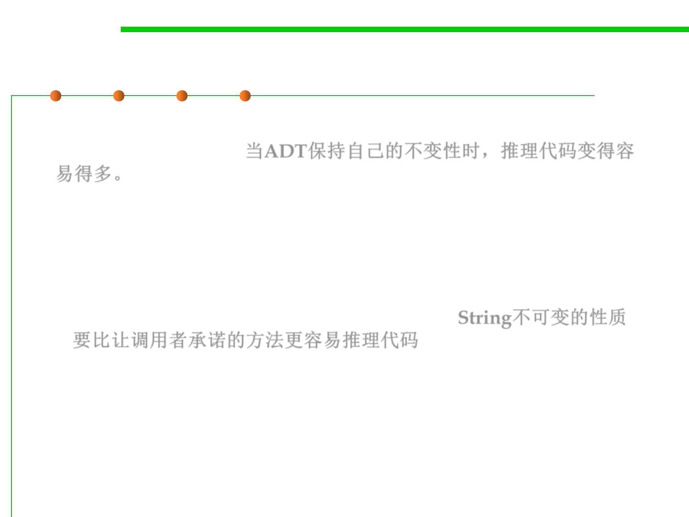

Why are invariants required?
3.3 Abstract Data Type (ADT)
▪ When an ADT preserves its own invariants, reasoning about the code
becomes much easier. 当ADT保持自己的不变性时，推理代码变得容
易得多。
– If you can count on the fact that Strings never change, you can rule out
that possibility when you’re debugging code that uses Strings – or when
you’re trying to establish an invariant for another ADT that uses Strings.
– Contrast that with a string type that guarantees that it will be immutable
only if its clients promise not to change it. Then you’d have to check all the
places in the code where the string might be used. String不可变的性质
要比让调用者承诺的方法更容易推理代码
▪ … Assume clients will try to destroy invariants (malicious hackers
or honest mistakes有意或者无意的)